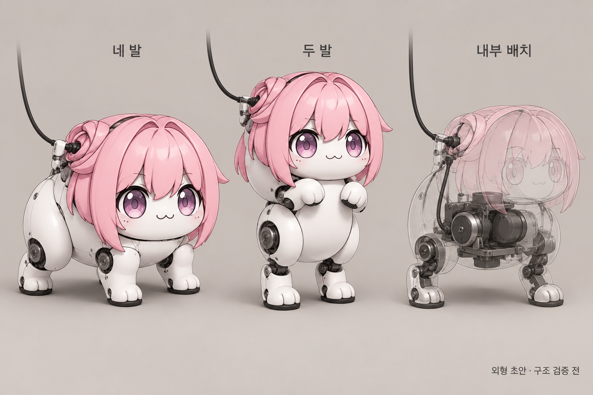
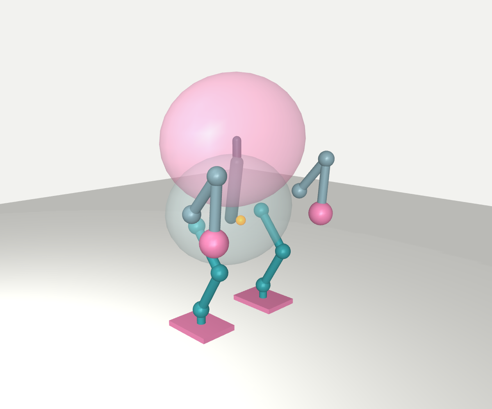
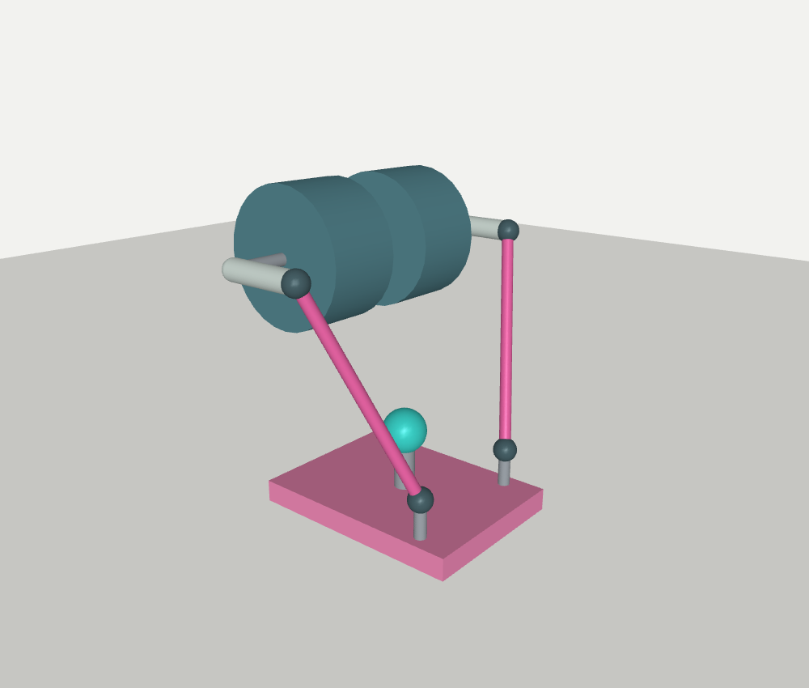

큰 얼굴과 짧은 팔다리.
관절은 몸속까지 이어지게.
도로롱 비율을 살리려면 몸통 안에 접힌 허벅지와 팔을 숨기는 구조가 유력하다. 크기와 가격 제한을 풀고, 두 발로 걷기·네 발로 이동하기·넘어진 뒤 복구를 위한 전체 구조를 검토했다.
구조 제안 + 계산한 배치도 · 제작용 설계 확정 전
위 그림은 목표 외형이다. 아래 치수·관절 수·계산 결과와 일치하는 제작 도면으로 취급하지 않는다.
우선 검토할 크기와 구조
작은 완제품 장난감보다 커진다. 그 공간을 관절의 가동 범위, 튼튼한 지지 구조, 모터를 식힐 공간에 쓴다. 크기·질량을 최소화한 결과는 아니다.
실제 뒷다리 링크 합은 29cm. 기준 자세에서 몸통 공간의 바닥선 아래로 드러나는 높이는 약 16cm다. 외피 개구부와 움직일 때 보이는 길이는 미설계다. 머리는 폭 46 × 높이 36 × 깊이 30cm의 공간 가정이며, 로봇 전체 폭은 앞발 위치에 따라 더 커진다.
두 자세를 같은 관절 길이로 계산했다

분홍 투명체: 머리 공간 · 회색 투명체: 몸통 공간 · 막대: 링크 중심선 · 구: 관절 중심 · 주황 점: 가정한 무게중심. 모터 하우징이나 완성된 프레임은 그려 넣지 않았다.
정해진 발 위치에 닿고, 가정한 관절 범위 안에 들어가는지 계산했다. 전체 부품의 무충돌, 안정적으로 서 있기, 보행 성공을 뜻하지 않는다.
골반의 세 축은 한 점에서 만나는 이상화다. 실제 모터·베어링을 넣어 축이 어긋나면 이 계산을 다시 해야 한다. 발목의 첫 막대 연결 치수안은 아래에서 별도로 검사했으며, 이 몸체 모델에 조립한 상태는 아니다.
외피 안의 구조는 이렇게 나눈다
① 큰 머리 · 가벼운 껍데기
표정과 머리카락은 얇은 외피로 만든다. 머리 질량은 650g을 예산으로 잡았다. 계산 보드와 전원 부품은 몸통으로 내린다.
목의 회전축을 머리 무게중심 가까이에 두고, 몸통이 기울어도 얼굴은 앞을 향하게 한다.
650g은 목표 배분이다. 실제 소재·벽 두께·충격 흡수 구조를 정한 실측값이 아니다.
② 몸통 · 하중을 받는 뼈대
골반과 어깨를 두 장의 금속 측판과 가로 보로 연결한다. 큰 관절축은 양쪽 베어링으로 받쳐 모터 축만으로 충격을 견디게 하지 않는다.
겉껍데기는 분리해 정비할 수 있게 한다. 모터의 열은 안쪽 프레임과 뒤쪽 통풍구로 뺀다.
프레임 두께·재질·축 지름·베어링 규격은 힘 계산 이후 선정한다.
③ 앞발 · 숨겨 놓은 팔
어깨 앞뒤·좌우, 팔꿈치의 3축이다. 평소에는 접어서 짧게 보이고, 네 발 자세나 복구 때는 펼쳐 바닥을 민다.
끝은 손가락 대신 둥근 고무 패드다. 지면 방향을 정밀하게 맞추는 손목을 생략할 수 있다.
짧은 고정 봉만 달면 머리 뒤쪽 바닥을 밀기 어렵다. 접힌 팔이 나오는 외피 틈이 필요하다.
| 부위 | 한쪽의 움직임 | 합계 | 맡는 일 |
|---|---|---|---|
| 뒷다리 | 골반 3 · 무릎 1 · 발목 2 | 12축 | 발 위치와 방향, 좌우 균형, 방향 전환 |
| 앞다리 | 어깨 2 · 팔꿈치 1 | 6축 | 네 발 지지, 팔 접기, 바닥 밀기 |
| 머리 | 앞뒤 기울기 | 1축 | 두 자세에서 얼굴 방향 유지 |
무거운 모터를 발에서 멀리
무릎: 한 링크 안에서 벨트로 전달
무릎 모터를 허벅지 위쪽으로 옮긴다. 모터와 무릎축을 같은 허벅지 부품이 지지하므로 중심 간 거리가 일정하다. 벨트는 무릎을 넘어 다른 움직이는 링크까지 이어 붙이지 않는다.
추가 감속 2~2.5배를 비교한다. 힘은 늘지만 속도·관성·마찰도 변한다.
발목: 두 모터와 두 막대
모터 두 개를 종아리 위쪽에 놓고, 서로 다르게 움직여 발의 앞뒤·좌우 기울기를 만든다. 발에는 지지축과 가벼운 발판을 남긴다.
모터 뒤쪽이 아닌 실제 관절축에서도 각도를 읽어 벨트·막대의 휨과 유격을 확인한다. 추가 센서와 연결부 무게는 질량 예산 안에서 다시 배분해야 한다.
발목 연결 치수도 한 단계 계산했다
발을 앞뒤 −50~35°, 좌우 −20~20°로 기울이는 30개 지정 각도를 잡았다. 모터 회전 팔 길이 네 가지를 비교하고, 두 막대의 길이가 유지되는 모터 각도를 계산했다.
| 모터의 회전 팔 길이 | 길이 조건을 만족한 표본 | 막대-모터 간격 하한이 양수인 표본 |
|---|

실제 치수로 그린 첫 발목 연결안. 가운데 점은 두 축의 중심이며 지지 베어링·연결부는 생략했다.
회전 팔 5cm와 막대 약 의 첫 치수안이 30표본의 길이 조건을 만족했다. 모터를 안쪽으로 옮기자 선택한 막대-모터 간격 하한은 최소 로 계산됐다.
대신 양쪽 회전 팔의 설치 평면 사이가 20cm다. 작은 발 안에 모든 것을 넣을 수 있는 구조가 아니다. 몸통 아래의 넓은 종아리 덮개와 추가 축 지지가 필요하다.
중립에서 발목에 앞뒤 8N·m와 좌우 6N·m를 동시에 요구하는 예시의 모터 토크 크기는 다. 자세가 바뀌면 배율도 바뀐다.
이번 검사는 막대 두 개와 모터 원통 두 개에 한정했다. 회전 팔 자체·베어링·축·중심 지지 구조·다른 다리·외피, 표본 사이 연속 움직임은 남아 있다. 30개 계산 성공을 발목 제작 승인으로 해석하지 않는다.
힘과 무게를 넣으면 달라지는 것
무릎은 8.5N·m 모터만 보고 고르면 부족할 수 있다
| 한 발 수직 힘 예시 | 무릎 기여분 |
|---|
몸 전체 무게에 해당하는 수직 힘만 대입했다. 다리 자체 무게·가속·충격·수평 힘은 생략했다. 이 자세가 한 발로 균형을 잡는다는 뜻이나 최종 필요 정격은 아니다.
| 추가 벨트 감속 | 공시 정격 변환 | 공시 최대 변환 |
|---|
효율 90% 가정. 벨트·축·베어링·드라이버·발열이 허용한다는 보장은 없다. 추가 감속이 커지면 속도는 나뉘고 모터의 관성도 관절에 더 크게 전달된다.
모터는 질량·힘의 비교 기준
| 참고 부품 | 개수 | 질량 |
|---|
전체 예산에는 프레임·연결부·발·머리와 몸통 외피·전자회로·배선·여유분을 넣었다. 배터리와 외부 전원 장치는 제외했다. 물리적인 배치와 전체 견적은 확정 전이며 구매 대상도 선정하지 않았다.
예를 들어 반지름 3cm 풀리에 20N·m를 전달하면 벨트 양쪽 장력 차만 약 667N이다. 초기 장력과 축 하중은 별도다. 작은 장난감용 프린트 기어로 가볍게 처리할 하중이 아니다.
일어서는 동작은 세 부분으로 나눠 본다
네 발 → 두 발
몸무게를 뒷발 쪽으로 옮기고, 앞발을 뗀 뒤 몸통을 세운다. 머리는 별도로 기울여 얼굴 방향을 유지한다.
앞발을 바닥에 고정한 채 끝까지 몸통을 세우는 방식으로 가정하지 않는다. 실제 전환 궤적은 미검증이다.
두 발 → 한 발 지지
현재 대칭 자세에서는 무게중심을 옆으로 약 옮겨야 한쪽 발의 안쪽 경계에 들어온다.
골반의 좌우 축과 발목의 좌우 축을 함께 쓰는 이유다. 정지 투영 조건부터 확인하고, 이후 실제 움직임을 계산한다.
발 경계에 겨우 들어오는 것은 여유 있는 균형이 아니다.
옆 / 등으로 넘어짐
외피만 바닥에 닿은 기준 자세에서, 등으로 누우면 어깨부터 바닥까지 약 다. 팔과 패드의 최대 도달 길이는 다.
거리상 바닥에 닿을 여지는 있다. 그러나 큰 머리를 피해 팔을 펼칠 수 있는지, 충분히 밀어 뒤집을 수 있는지는 아직 확인하지 않았다. 옆으로 누우면 위쪽 팔은 바로 바닥에 닿지 않는 조건도 나온다.
실제 사례가 뒷받침하는 범위
큰 캐릭터 몸체의 두 발 보행
Disney의 실제 로봇은 높이 66cm, 무게 15.4kg이며 다리마다 5축이다. 발목 좌우 구동을 생략하고 둥글고 탄성 있는 발바닥을 사용했다.
큰 외형의 캐릭터를 두 발로 움직인 근거다. 도로롱 형상, 네 발 전환, 자가복구를 입증한 사례는 아니다.
모터를 옮겨 벨트로 구동
Open Dynamic Robot Initiative는 브러시리스 모터와 낮은 감속비의 벨트 전달 장치를 실제 보행 로봇에 사용했다.
벨트 방식이 실제로 쓰인다는 근거다. 여기 제안한 무릎 벨트 규격이나 발목 막대 구조의 검증을 대신하지 않는다.
남겨 둘 선택지 두 개
19축: 발바닥 방향까지 제어
하자: 발목 두 축의 전달 장치가 복잡하고, 모터 수와 무게가 늘어난다.
얻는 것: 골반 위치와 발 방향을 조절할 자유가 커진다. 크기·가격을 잠시 풀고 두 발 보행을 우선 검토하는 현재 요구에는 이 안을 기준으로 계산했다.
17축: 발목 좌우를 수동으로
하자: 발바닥 좌우 기울기를 독립적으로 맞출 수 없어 몸통 움직임과 발 접촉에 더 의존한다.
얻는 것: 발목 구조와 모터 수를 줄일 수 있다. 둥근 탄성 발을 쓰는 실제 캐릭터 로봇 사례가 있다. 두 안 모두 이 로봇의 보행은 검증 전이다.
지금 가장 먼저 만들 제작 도면은 뒷다리 한쪽의 골반·무릎 전달·두 축 발목·외피 개구부다. 다음에는 누운 자세에서 앞팔이 통과할 공간과 몸을 미는 힘을 확인한다. 현재 결과는 구현할 구조를 좁힌 단계다.
전원과 제어도 몸체에 맞춘다
큰 관절은 48V 전원 기준으로 검토한다. 예시의 머리 모터는 24V라 별도의 전압 변환이나 같은 전압의 모터로 교체가 필요하다. 몸통의 고정 프레임에서 전원선 당김을 읽고, 머리를 돌리는 축에 케이블 하중을 걸지 않는다.
배터리 없이 개발해도 순간 전력, 멈출 때 돌아오는 전력, 배선 전압 강하를 처리해야 한다. 발 접촉 센서, 몸통 자세 센서, 관절 출력축 각도와 통신 지연을 모델에 넣는다. 목표 속도와 반응 시간은 부하 시험 전에는 숫자로 확정하지 않는다.
출처·계산·남은 검증
치수와 질량 가정 · 계산 결과 전체 · 재현 방법과 적용 범위 · 이전 작은 다리 검사
이번에 확인한 것: 지정한 두 자세의 발 도달과 설정 범위, 머리/몸통 공간과 바닥 사이 거리, 가정한 질량과 무게중심, 단순 힘·감속·장력 산술. 전체 부품 간섭·프레임 강도·발목 연결 장치의 상세 조립·보행·전환·자가복구·실물은 미검증이다.